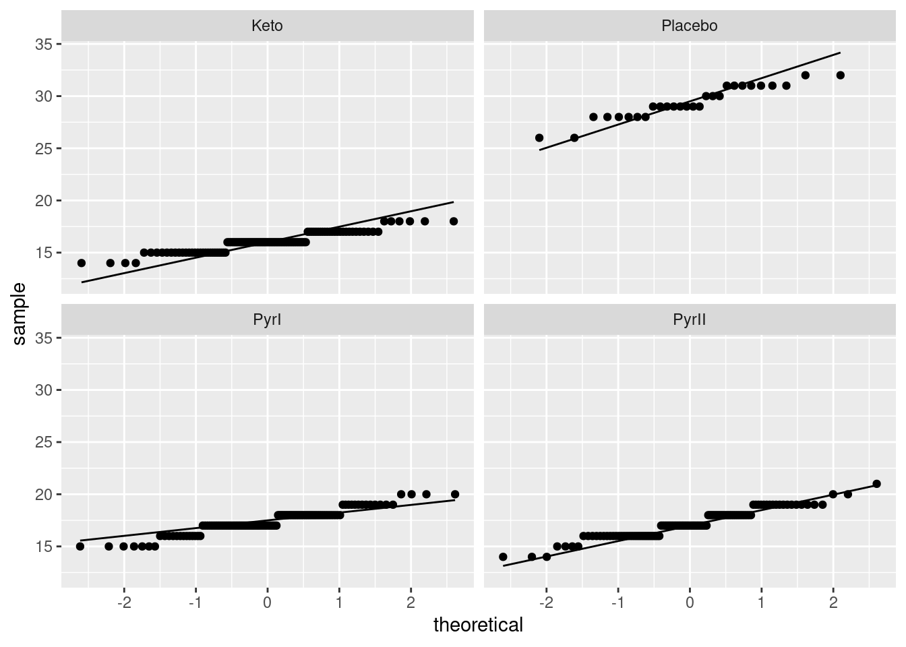
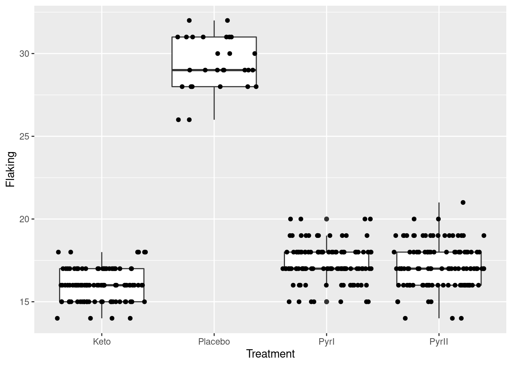

Chapter 8 Power and sample size
8.1 Simulating power
This question investigates power by simulation.
Use
rnormto generate 10 random values from a normal distribution with mean 20 and SD 2. Do your values look reasonable? Explain briefly. (You don’t need to draw a graph.)Estimate by simulation the power of a \(t\)-test to reject a null hypothesis of 20 when the true mean is also 20, the population SD is 2, and the sample size is 10, against a (default) two-sided alternative. Remember the steps: (i) generate a lot of random samples from the true distribution, (ii) run the \(t\)-test with the required null mean, (iii) pull out the P-values, (iv) count how many of them are 0.05 or less.
In the simulation you just did, was the null hypothesis true or false? Do you want to reject the null hypothesis or not? Explain briefly why the simulation results you got were (or were not) about what you would expect.
By copying, pasting and editing your code from the previous part, estimate the power of the test of \(H_0: \mu=20\) (against a two-sided alternative) when the true population mean is 22 (rather than 20).
Use R to calculate this power exactly (without simulation). Compare the exact result with your simulation.
8.2 Calculating power and sample size for estimating mean
We are planning a study to estimate a population mean. The population standard deviation is believed to be 20, and the population distribution is believed to be approximately normal. We will be testing the null hypothesis that the population mean is 100. Suppose the population mean is actually 110, and we want to determine how likely we are to (correctly) reject the null hypothesis in this case, using a two-sided (but one-sample) test with \(\alpha=0.05\).
We will take a sample of size \(n=30\). Calculate the power of this test.
Find the sample size necessary to obtain a power of at least 0.80 under these conditions. What sample size do you need? Explain briefly how your answer is consistent with (a).
8.3 Simulating power for proportions
In opinion surveys (and other places), we are testing for a
proportion \(p\) (for example, the proportion of people agreeing with
some statement). Often, we want to know whether the proportion is
“really” greater than 0.5.1
That would entail testing a null
\(H_0: p=0.5\) against an alternative \(H_a: p>0.5\). This is usually done
by calculating the test statistic
\[ z = { \hat{p} - 0.5 \over \sqrt{0.25/n}},\]
where \(\hat{p}\) is the observed proportion in the sample,
and getting a P-value from the upper tail of a standard normal
distribution. (The 0.25 is \(p(1-p)\) where \(p=0.5\).) This is what
prop.test does, as we investigate shortly.
Use
rbinomto generate a random value from a binomial distribution with \(n=100\) and \(p=0.6\). There are three inputs torbinom: the first one should be the number 1, and the second and third are the \(n\) and \(p\) of the binomial distribution.Using the random binomial that you generated just above, use
prop.testto test whether it could reasonably have come from a binomial population with \(n=100\) and \(p=0.5\), or whether \(p\) is actually bigger than 0.5. (Of course, you know it actually did not come from a population with \(p=0.5\).)prop.testhas, for us, four inputs, thus:
the observed number of successes
the
nof the binomial distributionthe null-hypothesis
pof the binomial distributionthe alternative hypothesis, here “greater”
Run
prop.testagain, just as you did before, but this time save the result, and extract the piece of it calledp.value. Is that the P-value from your test?Estimate the power of a test of \(H_0: p=0.5\) against \(H_a: p>0.5\) when \(n=500\) and \(p=0.56\), using \(\alpha=0.05\). There are three steps:
generate random samples from binomial distributions with \(n=500\) and \(p=0.56\), repeated “many” times (something like 1000 or 10,000 is good)
run
prop.teston each of those random samplesextract the P-value for each test and save the results (in a column called, perhaps,
pvals).
So I lied: the fourth and final step is to count how many of those P-values are 0.05 or less.
8.4 Designing a study to have enough power
You are designing a study to test the null hypothesis that a population mean is 0 against the alternative hypothesis that it is greater than 0. Assume that the population SD is \(\sigma=15\). It is important to detect the alternative \(\mu=2\); that is, we want to design the study so that most of the time the null hypothesis would be (correctly) rejected if in fact \(\mu=2\). A one-sample \(t\)-test will be used, and the data values are assumed to have a normal distribution.
Use simulation to estimate the power of this test when the sample size is 100. Use \(\alpha=0.05\).
Again by using simulation, estimate how large a sample size would be needed to obtain a power of 0.80. Show and briefly explain your process.
8.5 Power and \(\alpha\) in a skewed population
A population of a large number of values v is at , in a CSV file.
Read in the population and display some of the values.
Obtain a suitable plot of your population. What do you notice?
If you take a sample of 10 observations from this population and run a \(t\)-test, how likely are you to (correctly) reject the null hypothesis \(H_0: \mu = 4\), against the alternative \(H_a: \mu > 4\)? Investigate by simulation.
Try again with a sample size of 50 (leaving everything else the same). Explain briefly why the results so far are as you’d expect.
Again by simulation, estimate the probability that the null hypothesis \(H_0: \mu=5\) will be rejected when a sample of size 10 is taken from this population, in favour of the alternative \(H_a: \mu > 5\). Explain briefly why the answer is not what you would have expected, and why that happened here. (Hint: what is the population mean?)
My solutions follow:
8.6 Simulating power
This question investigates power by simulation.
- Use
rnormto generate 10 random values from a normal distribution with mean 20 and SD 2. Do your values look reasonable? Explain briefly. (You don’t need to draw a graph.)
Solution
rnorm with the number of values first, then the mean,
then the SD:
## [1] 21.59476 18.64044 21.83231 18.76556 18.64861 21.81889 21.62614 20.18249 16.91266 20.6349095% of the sampled values should be within 2 SDs of the mean, that is, between 16 and 24 (or 99.7% should be within 3 SDs of the mean, between 14 and 26). None of my values are even outside the interval 16 to 24, though yours may be different.
I saved mine in a variable and then displayed them, which you don’t need to do. I did because there’s another way of assessing them for reasonableness: turn the sample into \(z\)-scores and see whether the values you get look like \(z\)-scores (that is, most of them are between \(-2\) and 2, for example):
## [1] 0.79738130 -0.67977910 0.91615386 -0.61722168 -0.67569291 0.90944266 0.81307163 0.09124563 -1.54367207 0.31744905These ones look very much like \(z\)-scores. This, if you think about it, is really the flip-side of 68–95–99.7, so it’s another way of implementing the same idea.
You might also think of finding the sample mean and SD, and demonstrating that they are close to the right answers. Mine are:
## [1] 20.06568## [1] 1.731305The sample SD is more variable than the sample mean, so it can get further away from the population SD than the sample mean does from the population mean.
The downside to this idea is that it doesn’t get at assessing the normality, which looking at \(z\)-scores or equivalent does. Maybe coupling the above with a boxplot would have helped, had I not said “no graphs”, since then you’d (hopefully) see no outliers and a roughly symmetric shape.
This is old-fashioned “base R” technology; you could do it with a data frame like this:
These are different random numbers, but are about equally what you’d expect. (These ones are a bit less variable than you’d expect, but with only ten values, don’t expect perfection.)
Some discussion about the kind of values you should get, and whether or not you get them, is what is called for here. I want you to say something convincing about how the values you get come from a normal distribution with mean 20 and SD 2. “Close to 20” is not the whole answer here, because that doesn’t get at “how close to 20?”: that is, it talks about the mean but not about the SD.
\(\blacksquare\)
- Estimate by simulation the power of a \(t\)-test to reject a null hypothesis of 20 when the true mean is also 20, the population SD is 2, and the sample size is 10, against a (default) two-sided alternative. Remember the steps: (i) generate a lot of random samples from the true distribution, (ii) run the \(t\)-test with the required null mean, (iii) pull out the P-values, (iv) count how many of them are 0.05 or less.
Solution
Once you get the hang of these, they all look almost the
same. This one is easier than some because we don’t have to do
anything special to get a two-sided alternative hypothesis. The initial setup is to make a dataframe with a column called something like sim to label the simulations, and then a rowwise to generate one random sample, \(t\)-test and P-value for each simulation:
tibble(sim = 1:1000) %>%
rowwise() %>%
mutate(norm_sample = list(rnorm(10, 20, 2))) %>%
mutate(t_test = list(t.test(norm_sample, mu = 20))) %>%
mutate(pval = t_test$p.value) %>%
count(pval <= 0.05)The power is about 4.2%. This seems depressingly small, but see the next part. (Are you confused about something in this one? You have a right to be.)
\(\blacksquare\)
- In the simulation you just did, was the null hypothesis true or false? Do you want to reject the null hypothesis or not? Explain briefly why the simulation results you got were (or were not) about what you would expect.
Solution
The null mean and the true mean were both 20: that is, the null hypothesis was correct, and rejecting it would be a mistake, to be precise a type I error. We were doing the test at \(\alpha=0.05\) (by comparing our collection of simulated P-values with 0.05), so we should be making a type I error 5% of the time. This is entirely in line with the 4.2% of (wrong) rejections that I had. Your estimation is likely to be different from mine, but you should be rejecting about 5% of the time. If your result is very different from 5%, that’s an invitation to go back and check your code. On the other hand, if it is about 5%, that ought to give you confidence to go on and use the same ideas for the next part.
\(\blacksquare\)
- By copying, pasting and editing your code from the previous part, estimate the power of the test of \(H_0: \mu=20\) (against a two-sided alternative) when the true population mean is 22 (rather than 20).
Solution
Here’s the code we just used:
tibble(sim = 1:1000) %>%
rowwise() %>%
mutate(norm_sample = list(rnorm(10, 20, 2))) %>%
mutate(t_test = list(t.test(norm_sample, mu = 20))) %>%
mutate(pval = t_test$p.value) %>%
count(pval <= 0.05)One of those 20s needs to become 22. Not the one in the
t.test, since the hypotheses have not changed. So we need to
change the 20 in the rnorm line to 22, since that’s where
we’re generating data from the true distribution. The rest of it stays
the same:
tibble(sim = 1:1000) %>%
rowwise() %>%
mutate(norm_sample = list(rnorm(10, 20, 2))) %>%
mutate(t_test = list(t.test(norm_sample, mu = 22))) %>%
mutate(pval = t_test$p.value) %>%
count(pval <= 0.05)This time, we want to reject, since the null hypothesis is
false. So look at the TRUE count: the power is about
\(80\%\). We are very likely to correctly reject a null
of 20 when the mean is actually 22.
Extra: another way to reason that the power should be fairly large is to think about what kind of sample you are likely to get from the true distribution: one with a mean around 22 and an SD around 2. Thus the \(t\)-statistic should be somewhere around this (we have a sample size of 10):
## [1] 3.162278and the two-sided P-value should be about
## [1] 0.01150799Of course, with your actual data, you will sometimes be less lucky than this (a sample mean nearer 20 or a larger sample SD), but sometimes you will be luckier. But the suggestion is that most of the time, the P-value will be pretty small and you will end up correctly rejecting.
The quantity t_stat above, 3.16, is known to some
people as an “effect size”, and summarizes how far apart the null
and true means are, relative to the amount of variability present (in
the sampling distribution of the sample mean). As effect sizes go,
this one is pretty large.
\(\blacksquare\)
- Use R to calculate this power exactly (without simulation). Compare the exact result with your simulation.
Solution
This is power.t.test. The quantity delta is
the difference between true and null means:
##
## One-sample t test power calculation
##
## n = 10
## delta = 2
## sd = 2
## sig.level = 0.05
## power = 0.8030962
## alternative = two.sidedThis, 0.803, is very close to the value I got from my simulation. Which makes me think I did them both right. This is not a watertight proof, though: for example, I might have made a mistake and gotten lucky somewhere. But it does at least give me confidence.
Extra: when you estimate power by simulation, what you are doing is
rejecting or not with a certain probability (which is the same for all
simulations). So the number of times you actually do reject has
a binomial distribution with \(n\) equal to the number of simulated
P-values you got (1000 in my case; you could do more) and a \(p\) that
the simulation is trying to estimate. This is inference for a
proportion, exactly what prop.test does.
Recall that prop.test has as input:
a number of “successes” (rejections of the null in our case)
the number of trials (simulated tests)
the null-hypothesis value of
p(optional if you only want a CI)(optional) a confidence level
conf.level.
In part (b), we knew that the probability of (incorrectly) rejecting should have been 0.05 and we rejected 42 times out of 1000:
##
## 1-sample proportions test with continuity correction
##
## data: 42 out of 1000, null probability 0.05
## X-squared = 1.1842, df = 1, p-value = 0.2765
## alternative hypothesis: true p is not equal to 0.05
## 95 percent confidence interval:
## 0.03079269 0.05685194
## sample estimates:
## p
## 0.042** check that the values are correct below **
Looking at the P-value, we definitely fail to reject that the probability of (incorrectly) rejecting is the 0.05 that it should be. Ouch. That’s true, but unnecessarily confusing. Look at the confidence interval instead, 0.031 to 0.057. The right answer is 0.05, which is inside that interval, so good.
In part (c), we didn’t know what the power was going
to be (not until we calculated it with power.t.test, anyway),
so we go straight for a confidence interval; the default 95% confidence
level is fine. We (correctly) rejected 798 times out of 1000:
##
## 1-sample proportions test with continuity correction
##
## data: 798 out of 1000, null probability 0.5
## X-squared = 354.02, df = 1, p-value < 2.2e-16
## alternative hypothesis: true p is not equal to 0.5
## 95 percent confidence interval:
## 0.7714759 0.8221976
## sample estimates:
## p
## 0.798I left out the 3rd input since we’re not doing a test, and ignore the P-value that comes out. (The default null proportion is 0.5, which often makes sense, but not here.)
According to the confidence interval, the estimated power is between 0.771 and 0.822. This interval definitely includes what we now know is the right answer of 0.803.
This might be an accurate enough assessment of the power for you, but if not, you can do more simulations, say 10,000:
tibble(sim = 1:10000) %>%
rowwise() %>%
mutate(norm_sample = list(rnorm(10, 20, 2))) %>%
mutate(t_test = list(t.test(norm_sample, mu = 22))) %>%
mutate(pval = t_test$p.value) %>%
count(pval <= 0.05)I copied and pasted my code again, which means that I’m dangerously close to turning it into a function, but anyway.
The confidence interval for the power is then
##
## 1-sample proportions test with continuity correction
##
## data: 7996 out of 10000, null probability 0.5
## X-squared = 3589.2, df = 1, p-value < 2.2e-16
## alternative hypothesis: true p is not equal to 0.5
## 95 percent confidence interval:
## 0.7915892 0.8073793
## sample estimates:
## p
## 0.7996that is, from 0.792 to 0.807, which once again includes the right answer of 0.803. The first interval, based on 1,000 simulations, has length 0.051, while this interval has length 0.015. The first interval is more than three times as long as the second, which is about what you’d expect since the first one is based on 10 times fewer simulations, and thus ought to be a factor of \(\sqrt{10}\simeq 3.16\) times longer.
This means that you can estimate power as accurately as you like by doing a large enough (possibly very large) number of simulations. Provided, that is, that you are prepared to wait a possibly long time for it to finish working!
\(\blacksquare\)
8.7 Calculating power and sample size for estimating mean
We are planning a study to estimate a population mean. The population standard deviation is believed to be 20, and the population distribution is believed to be approximately normal. We will be testing the null hypothesis that the population mean is 100. Suppose the population mean is actually 110, and we want to determine how likely we are to (correctly) reject the null hypothesis in this case, using a two-sided (but one-sample) test with \(\alpha=0.05\).
- We will take a sample of size \(n=30\). Calculate the power of this test.
Solution
power.t.test. Fill in: sample size n, difference
in means delta (\(10=110-100\)), population SD sd,
type of test type (one.sample) and kind of
alternative hypothesis alternative
(two.sided). Leave out power since that’s what
we want:
##
## One-sample t test power calculation
##
## n = 30
## delta = 10
## sd = 20
## sig.level = 0.05
## power = 0.7539627
## alternative = two.sidedI meant “calculate” exactly rather than “estimate” (by simulation). Though if you want to, you can do that as well, thus:
tibble(sim = 1:1000) %>%
rowwise() %>%
mutate(samples = list(rnorm(30, 110, 20))) %>%
mutate(ttest = list(t.test(samples, mu= 100))) %>%
mutate(pvals = ttest$p.value) %>%
count(pvals<=0.05)That came out alarmingly close to the exact answer.
\(\blacksquare\)
- Find the sample size necessary to obtain a power of at least 0.80 under these conditions. What sample size do you need? Explain briefly how your answer is consistent with (a).
Solution
Again, the implication is “by calculation”.
This time, in power.t.test, put in 0.80 for
power and leave out n. The order of things
doesn’t matter (since I have named everything that’s going into
power.t.test):
##
## One-sample t test power calculation
##
## n = 33.3672
## delta = 10
## sd = 20
## sig.level = 0.05
## power = 0.8
## alternative = two.sidedTo get sample size for power at least 0.80, we have to round 33.36 up to the next whole number, ie. \(n=34\) is needed. (A sample of size 33 wouldn’t quite have enough power.)
This answer is consistent with (a) because a sample size of 30 gave a power a bit less than 0.80, and so to increase the power by a little (0.75 to 0.80), we had to increase the sample size by a little (30 to 34).
Extra: estimating sample sizes by simulation is tricky, because the sample size has to be input to the simulation. That means your only strategy is to try different sample sizes until you find one that gives the right power.
In this case, we know that a sample of size 30 doesn’t give quite enough power, so we have to up the sample size a bit. How about we try 40? I copied and pasted my code from above and changed 30 to 40:
tibble(sim = 1:1000) %>%
rowwise() %>%
mutate(samples = list(rnorm(40, 110, 20))) %>%
mutate(ttest = list(t.test(samples, mu= 100))) %>%
mutate(pvals = ttest$p.value) %>%
count(pvals<=0.05)Now the power is a bit too big, so we don’t need a sample size quite as big as 40. So probably our next guess would be 35. But before we copy and paste again, we should be thinking about making a function of it first, with the sample size as input. Copy-paste once more and edit:
sim_power=function(n) {
tibble(sim = 1:1000) %>%
rowwise() %>%
mutate(samples = list(rnorm(n, 110, 20))) %>%
mutate(ttest = list(t.test(samples, mu= 100))) %>%
mutate(pvals = ttest$p.value) %>%
ungroup() %>%
count(pvals<=0.05)
}In the grand scheme of things, we might want to have the null and true means, population SD and \(\alpha\) be inputs to the function as well, so that we have a more general tool, but this will do for now.
Let’s run it with a sample size of 35:
and I’m going to call that good. (Because there is randomness in the estimation of the power, don’t expect to get too close to the right answer. This one came out a fair bit less than the right answer; the power for \(n=35\) should be a bit more than 0.80.)
Now that you have the software to do it, you can see that figuring out a sample size like this, at least roughly, won’t take very long: each one of these simulations takes maybe seconds to run, and all you have to do is copy and paste the previous one, and edit it to contain the new sample size before running it again. You’re making the computer work hard while you lazily sip your coffee, but there’s no harm in that: programmer’s brain cells are more valuable than computer CPU cycles, and you might as well save your brain cells for when you really need them.
You might even think about automating this further. The easiest way, now that we have the function, is something like this:
tibble(ns = seq(20, 50, 5)) %>%
rowwise() %>%
mutate(power_tab = list(sim_power(ns))) %>%
unnest(power_tab) %>%
pivot_wider(names_from = `pvals <= 0.05`, values_from = n)The business end of this is happening in the first three lines. I wasn’t thinking of this when I originally wrote sim_power to return a dataframe, so there is a bit more fiddling after the simulations are done: I have to unnest to see what the list-column power_tab actually contains, and because of the layout of the output from unnesting sim_power (long format), it looks better if I pivot it wider, so that I can just cast my eye down the TRUE column and see the power increasing as the sample size increases.
You might also think of something like bisection to find the sample size that has power 0.8, but it starts getting tricky because of the randomness; just by chance, it may be that sometimes the simulated power goes down as the sample size goes up. With 1000 simulations each time, it seems that the power ought to hit 80% with a sample size between 30 and 35.
8.8 Simulating power for proportions
In opinion surveys (and other places), we are testing for a
proportion \(p\) (for example, the proportion of people agreeing with
some statement). Often, we want to know whether the proportion is
“really” greater than 0.5.2
That would entail testing a null
\(H_0: p=0.5\) against an alternative \(H_a: p>0.5\). This is usually done
by calculating the test statistic
\[ z = { \hat{p} - 0.5 \over \sqrt{0.25/n}},\]
where \(\hat{p}\) is the observed proportion in the sample,
and getting a P-value from the upper tail of a standard normal
distribution. (The 0.25 is \(p(1-p)\) where \(p=0.5\).) This is what
prop.test does, as we investigate shortly.
- Use
rbinomto generate a random value from a binomial distribution with \(n=100\) and \(p=0.6\). There are three inputs torbinom: the first one should be the number 1, and the second and third are the \(n\) and \(p\) of the binomial distribution.
Solution
I am doing some preparatory work that you don’t need to do:
By setting the “seed” for the random number generator, I guarantee
that I will get the same answers every time I run my code below (and
therefore I can talk about my answers without worrying that they will
change). Up to you whether you do this. You can “seed” the random
number generator with any number you like. A lot of people use
1. Mahinda seems to like 123. Mine is an old phone
number.
And so to work:
## [1] 60I got exactly 60% successes this time. You probably won’t get exactly 60, but you should get somewhere close. (If you use my random number seed and use the random number generator exactly the same way I did, you should get the same values I did.)
For fun, you can see what happens if you change the 1:
## [1] 58 57 55Three random binomials, that happened to come out just below 60. We’re
going to leave the first input as 1, though, and let rowwise
handle “lots of sampled values” later.
\(\blacksquare\)
- Using the random binomial that you generated just above, use
prop.testto test whether it could reasonably have come from a binomial population with \(n=100\) and \(p=0.5\), or whether \(p\) is actually bigger than 0.5. (Of course, you know it actually did not come from a population with \(p=0.5\).)prop.testhas, for us, four inputs, thus:
the observed number of successes
the
nof the binomial distributionthe null-hypothesis
pof the binomial distributionthe alternative hypothesis, here “greater”
Solution
I got exactly 60 successes, so I do this:
##
## 1-sample proportions test with continuity correction
##
## data: 60 out of 100, null probability 0.5
## X-squared = 3.61, df = 1, p-value = 0.02872
## alternative hypothesis: true p is greater than 0.5
## 95 percent confidence interval:
## 0.5127842 1.0000000
## sample estimates:
## p
## 0.6The P-value should at least be fairly small, since 60 is a bit bigger than 50. (Think about tossing a coin 100 times; would 60 heads make you doubt the coin’s fairness? The above says it should.)
\(\blacksquare\)
- Run
prop.testagain, just as you did before, but this time save the result, and extract the piece of it calledp.value. Is that the P-value from your test?
Solution
Copying and pasting:
## [1] 0.02871656Yep, the same.
\(\blacksquare\)
- Estimate the power of a test of \(H_0: p=0.5\) against \(H_a: p>0.5\) when \(n=500\) and \(p=0.56\), using \(\alpha=0.05\). There are three steps:
generate random samples from binomial distributions with \(n=500\) and \(p=0.56\), repeated “many” times (something like 1000 or 10,000 is good)
run
prop.teston each of those random samplesextract the P-value for each test and save the results (in a column called, perhaps,
pvals).
So I lied: the fourth and final step is to count how many of those P-values are 0.05 or less.
Solution
The first part of the first step is to create a column called something like sim that labels each simulated sample, and to make sure that everything happens rowwise. After that, you follow the procedure:
tibble(sim = 1:1000) %>%
rowwise() %>%
mutate(sample = rbinom(1, 500, 0.56)) %>%
mutate(test = list(prop.test(sample, 500, 0.5, alternative = "greater"))) %>%
mutate(pvals = test$p.value) %>%
count(pvals <= 0.05)The previous parts, using rbinom and prop.test,
were meant to provide you with the ingredients for this part.
The first step is to use rbinom. The first input is 1 since
we only want one random binomial each time (the rowwise will
handle the fact that you actually want lots of them; you only want one per row since you are working rowwise). The second step
runs prop.test; the first input to that is each one of the
numbers of successes from the first step. The last part is to pull out all the P-values and
make a table of them, just like the example in lecture.
The estimated power is about 85%. That is, if \(p\) is actually 0.56 and we have a sample of size 500, we have a good chance of (correctly) rejecting that \(p=0.5\).
Extra: It turns out that SAS can work out this power by calculation
(using proc power).
SAS says our power is also about 85%, as our simulation
said. I was actually pleased that my simulation came
out so close to the right answer.
In contrast to power.t.test, SAS’s proc power
handles power analyses for a lot of things, including analysis of
variance, correlation and (multiple) regression. What these have in
common is some normal-based theory that allows you (under assumptions
of sufficiently normal-shaped populations) to calculate the exact
answer (that is, the distribution of the test statistic when the
alternative hypothesis is true). The case we looked at is one
of those because of the normal approximation to the binomial: once \(n\)
gets big, particularly if \(p\) is somewhere near 0.5, the binomial is
very well approximated by a normal with the right mean and SD.
The moral of this story is that when you have a decently large sample, \(n=500\) in this case, \(p\) doesn’t have to get very far away from 0.5 before you can correctly reject 0.5. Bear in mind that sample sizes for estimating proportions need to be larger than those for estimating means, so \(n=500\) is large without being huge. The practical upshot is that if you design a survey and give it to 500 (or more) randomly chosen people, the proportion of people in favour doesn’t have to be much above 50% for you to correctly infer that it is above 50%, most of the time.
\(\blacksquare\)
8.9 Designing a study to have enough power
You are designing a study to test the null hypothesis that a population mean is 0 against the alternative hypothesis that it is greater than 0. Assume that the population SD is \(\sigma=15\). It is important to detect the alternative \(\mu=2\); that is, we want to design the study so that most of the time the null hypothesis would be (correctly) rejected if in fact \(\mu=2\). A one-sample \(t\)-test will be used, and the data values are assumed to have a normal distribution.
- Use simulation to estimate the power of this test when the sample size is 100. Use \(\alpha=0.05\).
Solution
Use at least 1000 simulations (more, if you’re willing to wait for it). In rnorm, the sample size is first, then the (true) population mean, then the (assumed) population SD:
tibble(sim = 1:1000) %>%
rowwise() %>%
mutate(my_sample = list(rnorm(100, 2, 15))) %>%
mutate(t_test = list(t.test(my_sample, mu = 0, alternative = "greater"))) %>%
mutate(p_value = t_test$p.value) %>%
count(p_value <= 0.05)The power is (estimated as) a disappointing 0.361. Your answer won’t (most likely) be the same as this, but it should be somewhere close. I would like to see you demonstrate that you know what power is, for example “if the population mean is actually 2, the null hypothesis \(H_0: \mu = 0\), which is wrong, will only be rejected about 36% of the time.”3
The test we are doing is one-sided, so you need the alternative in there. If you omit it, you’ll have the answer to a different problem:
tibble(sim = 1:1000) %>%
rowwise() %>%
mutate(my_sample = list(rnorm(100, 2, 15))) %>%
mutate(t_test = list(t.test(my_sample, mu = 0))) %>%
mutate(p_value = t_test$p.value) %>%
count(p_value <= 0.05)This is the probability that you reject \(H_0: \mu=0\) in favour of \(H_a: \mu \ne 0\). This is smaller, because the test is “wasting effort” allowing the possibility of rejecting when the sample mean is far enough less than zero, when most of the time the samples drawn from the true distribution have mean greater than zero. (If you get a sample mean of 2.5, say, the P-value for a one-sided test will be smaller than for a two-sided one.)
Extra 1:
This low power of 0.361 is because the population SD is large relative to the kind of difference from the null that we are hoping to find. To get a sense of how big the power might be, imagine you draw a “typical” sample from the true population: it will have a sample mean of 2 and a sample SD of 15, so that \(t\) will be about
## [1] 1.333333You won’t reject with this (\(t\) would have to be bigger than 2), so in the cases where you do reject, you’ll have to be more lucky: you’ll need a sample mean bigger than 2, or a sample SD smaller than 15. So the power won’t be very big, less than 0.5, because about half the time you’ll get a test statistic less than 1.33 and about half the time more, and not all of those will lead to rejection.
Extra 2:
This is exactly the situation where power.t.test works, so we can get the exact answer (you need all the pieces):
##
## One-sample t test power calculation
##
## n = 100
## delta = 2
## sd = 15
## sig.level = 0.05
## power = 0.3742438
## alternative = one.sidedYour answer, from 1000 simulations, should be within about 3 percentage points of that. (Mine was only about 1 percentage point off.)
\(\blacksquare\)
- Again by using simulation, estimate how large a sample size would be needed to obtain a power of 0.80. Show and briefly explain your process.
Solution
The point of this one is the process as well as the final answer, so you need to show and justify what you are doing. Showing only a final answer does not show that you know how to do it. The whole point of this one is to make mistakes and fix them!
The simulation approach does not immediately give you a sample size for fixed power, so what you have to do is to try different sample sizes until you get one that gives a power close enough to 0.80. You have to decide what “close enough” means for you, given that the simulations have randomness in them. I’m going to use 10,000 simulations for each of my attempts, in the hope of getting a more accurate answer.
First off, for a sample size of 100, the power was too small, so the answer had better be bigger than 100. I’ll try 200. For these, copy and paste the code, changing the sample size each time:
tibble(sim = 1:10000) %>%
rowwise() %>%
mutate(my_sample = list(rnorm(200, 2, 15))) %>%
mutate(t_test = list(t.test(my_sample, mu = 0, alternative = "greater"))) %>%
mutate(p_value = t_test$p.value) %>%
count(p_value <= 0.05)A sample size of 200 isn’t big enough yet. I’ll double again to 400:
tibble(sim = 1:10000) %>%
rowwise() %>%
mutate(my_sample = list(rnorm(400, 2, 15))) %>%
mutate(t_test = list(t.test(my_sample, mu = 0, alternative = "greater"))) %>%
mutate(p_value = t_test$p.value) %>%
count(p_value <= 0.05)Getting closer. 400 is too big, but closer than 200. 350?
tibble(sim = 1:10000) %>%
rowwise() %>%
mutate(my_sample = list(rnorm(350, 2, 15))) %>%
mutate(t_test = list(t.test(my_sample, mu = 0, alternative = "greater"))) %>%
mutate(p_value = t_test$p.value) %>%
count(p_value <= 0.05)Close! I reckon you could call that good (see below), or try again with a sample size a bit less than 350:
tibble(sim = 1:10000) %>%
rowwise() %>%
mutate(my_sample = list(rnorm(345, 2, 15))) %>%
mutate(t_test = list(t.test(my_sample, mu = 0, alternative = "greater"))) %>%
mutate(p_value = t_test$p.value) %>%
count(p_value <= 0.05)340 is definitely too small:
tibble(sim = 1:10000) %>%
rowwise() %>%
mutate(my_sample = list(rnorm(340, 2, 15))) %>%
mutate(t_test = list(t.test(my_sample, mu = 0, alternative = "greater"))) %>%
mutate(p_value = t_test$p.value) %>%
count(p_value <= 0.05)This is actually not as close as I was expecting. I think we are getting close to simulation accuracy for this number of simulations. If we do 10,000 simulations of an event with probability 0.8 (correctly rejecting this null), below are the kind of results we might get.4 This is the middle 95% of that distribution.
## [1] 7921 8078Anything between those limits is the kind of thing we might get by chance, so simulation doesn’t let us distinguish between 347 and 350 as the correct sample size. Unless we do more than 10,000 simulations, of course!
If you stuck with 1000 simulations each time, these are the corresponding limits:
## [1] 775 824and any sample sizes that produce an estimated power between these are as accurate as you’ll get. (Here you see the advantage of doing more simulations.)
If you’ve been using 10,000 simulations each time like me, you’ll have noticed that these actually take a noticeable time to run. This is why coders always have a coffee or something else to sip on while their code runs; coders, like us, need to see the output to decide what to do next. Or you could install the beepr package, and get some kind of sound when your simulation finishes, so that you’ll know to get off Twitter5 and see what happened. There are also packages that will send you a text message or will send a notification to all your devices.
What I want to see from you here is some kind of trial and error that proceeds logically, sensibly increasing or decreasing the sample size at each trial, until you have gotten reasonably close to power 0.8.
Extra: once again we can figure out the correct answer:
##
## One-sample t test power calculation
##
## n = 349.1256
## delta = 2
## sd = 15
## sig.level = 0.05
## power = 0.8
## alternative = one.sidedThis does not answer the question, though, since you need to do it by simulation with trial and error. If you want to do it this way, do it at the end as a check on your work; if the answer you get this way is very different from the simulation results, that’s an invitation to check what you did.
350 actually is the correct answer. But you will need to try different sample sizes until you get close enough to a power of 0.8; simply doing it for \(n=350\) is not enough, because how did you know to try 350 and not some other sample size?
\(\blacksquare\)
8.10 Power and \(\alpha\) in a skewed population
A population of a large number of values v is at , in a CSV file.
- Read in the population and display some of the values.
Solution
##
## ── Column specification ────────────────────────────────────────────────────────────────────────────────────────────────────────────────────────────────────────────────────────────────────────────────────────────────────────────────────────────────────
## cols(
## v = col_double()
## )10,000 values. A large population. (From these few values, v seems to be positive but rather variable.)
\(\blacksquare\)
- Obtain a suitable plot of your population. What do you notice?
Solution
One quantitative variable, so a histogram. The population is large, so you can use more bins than usual. Sturges’ rule says 14 bins (the logarithm below is base 2, or, the next power of 2 above 10,000 is 16,384 which is \(2^{14}\)):
## [1] 13.28771## [1] 16384
Pick a number of bins: the default 30 bins is pretty much always too many. Any number of bins that shows this shape is good as an answer, but you also need to display some thinking about how many bins to use, either starting with a rule as I did, or experimenting with different numbers of bins. Rules are not hard and fast; it so happened that I liked the picture that 14 bins gave, so I stopped there. Thirty bins, the default, is actually not bad here:
## `stat_bin()` using `bins = 30`. Pick better value with `binwidth`.
but if you do this, you need to say something that indicates some conscious thought, such as saying “this number of bins gives a good picture of the shape of the distribution”, which I am OK with. Have a reason for doing what you do.
This is skewed to the right, or has a long right tail. This is a better description than “outliers”: there are indeed some very large values (almost invisible on the histogram), but to say that is to imply that the rest of the distribution apart from the outliers has a regular shape, not something you can say here.6
Extra: The issue that’s coming up is whether this is normally-distributed, which of course it is not. This is a normal quantile plot. (Idea: if the points follow the line, at least approximately, the variable is normally distributed; if not, not.):

That is your archetypal skewed-to-right. The two highest values are not a lot higher than the rest, again supporting a curved shape overall (skewness) on this plot, rather than the problem being outliers. (The highest values are consistent with the shape of the curve, rather than being unusually high compared to the curve.)
\(\blacksquare\)
- If you take a sample of 10 observations from this population and run a \(t\)-test, how likely are you to (correctly) reject the null hypothesis \(H_0: \mu = 4\), against the alternative \(H_a: \mu > 4\)? Investigate by simulation.
Solution
As you noted, this is a one-sided alternative, so make sure your code does the right thing. Take a lot of random samples, run the \(t\)-test on each one, grab the P-value each time, count the number of P-values less or equal to your \(\alpha\). This is not a bootstrap, so the sampling needs to be without replacement, and you need to say how big the sample is:
tibble(sim = 1:1000) %>%
rowwise() %>%
mutate(my_sample = list(sample(pop$v, 10))) %>%
mutate(t_test = list(t.test(my_sample, mu = 4, alternative = "greater"))) %>%
mutate(p_value = t_test$p.value) %>%
count(p_value <= 0.05)The estimated power is only about 0.19.
As to the code, well, the samples and the \(t\)-test both consist of more than one thing, so in the mutates that create them, don’t forget the list around the outside, which will create a list-column.
Here, and elsewhere in this question, use at least 1000 simulations. More will give you more accurate results, but you’ll have to wait longer for it to run. Your choice.
As a final remark, you can not do this one by algebra, as you might have done in other courses, because you do not know the functional form of the population distribution. The power calculations you may have done before as calculations typically assume a normal population, because if you don’t, the algebra gets too messy too fast. (You’d need to know the distribution of the test statistic under the alternative hypothesis, which in cases beyond the normal is not usually known.)
\(\blacksquare\)
- Try again with a sample size of 50 (leaving everything else the same). Explain briefly why the results so far are as you’d expect.
Solution
For the code, this is copy-paste-edit. Just change the sample size:
tibble(sim = 1:1000) %>%
rowwise() %>%
mutate(my_sample = list(sample(pop$v, 50))) %>%
mutate(t_test = list(t.test(my_sample, mu = 4, alternative = "greater"))) %>%
mutate(p_value = t_test$p.value) %>%
count(p_value <= 0.05)The power is now much bigger, around 73%. This is as expected because with a larger sample size we should be more likely to reject a false null hypothesis.
The reason for this is that the mean of a bigger sample should be closer to the population mean, because of the Law of Large Numbers, and thus further away from the incorrect null hypothesis and more likely far enough away to reject it. In this case, as you will see shortly, the population mean is 5, and so, with a bigger sample, the sample mean will almost certainly be closer to 5 and further away from 4.
I have a feeling you could formalize this kind of argument with Chebyshev’s inequality, which would apply to any kind of population.7 I think I’d have to write it down to get it right, though.
\(\blacksquare\)
- Again by simulation, estimate the probability that the null hypothesis \(H_0: \mu=5\) will be rejected when a sample of size 10 is taken from this population, in favour of the alternative \(H_a: \mu > 5\). Explain briefly why the answer is not what you would have expected, and why that happened here. (Hint: what is the population mean?)
Solution
Taking the hint first:
(I’m hoping that some light dawns at this point), and copy-paste-edit your simulation code again, this time changing the null mean to 5:
tibble(sim = 1:1000) %>%
rowwise() %>%
mutate(my_sample = list(sample(pop$v, 10))) %>%
mutate(t_test = list(t.test(my_sample, mu = 5, alternative = "greater"))) %>%
mutate(p_value = t_test$p.value) %>%
count(p_value <= 0.05)The “power” is estimated to be 0.020. (Again, your value won’t be exactly this, most likely, but it should be somewhere close.)
So what were we expecting? This time, the null hypothesis, that the population mean is 5, is actually true. So rejecting it is now a type I error, and the probability of that should be \(\alpha\), which was 0.05 here. In our simulation, though, the estimated probability is quite a bit less than 0.05. (Your result will probably differ from mine, but it is not likely to be bigger than 0.05).
To think about why that happened, remember that this is a very skewed population, and the sample size of 10 is not big, so this is not really the situation in which we should be using a \(t\)-test. The consequence of doing so anyway, which is what we investigated, is that the actual \(\alpha\) of our test is not 0.05, but something smaller: the test is not properly calibrated.
If you do this again for a sample of size 50, you’ll find that the simulation tells you that \(\alpha\) is closer to 0.05, but still less. The population is skewed enough that the Central Limit Theorem still hasn’t kicked in yet, and so we still cannot trust the \(t\)-test to give us a sensible P-value.
Extra: a lot more discussion on what is happening here:
This test is what is known in the jargon as “conservative”. To a statistician, this means that the probability of making a type I error is smaller than it should be. That is in some sense safe, in that if you reject, you can be pretty sure that this rejection is correct, but it makes it a lot harder than it should to reject in the first place, and thus you can fail to declare a discovery when you have really made one (but the test didn’t say so).
I did some investigation to see what was going on. First, I ran the simulation again, but this time keeping the mean and SD of each sample, as well as the \(t\)-statistic, but not actually doing the \(t\)-test:
tibble(sim = 1:1000) %>%
rowwise() %>%
mutate(my_sample = list(sample(pop$v, 10))) %>%
mutate(xbar = mean(my_sample),
s = sd(my_sample),
t_stat = (xbar - 5) / (s / sqrt(10))) -> mean_sd
mean_sdAs for coding, I made a dataframe with a column sim that numbers the individual samples, made sure I said that I wanted to work rowwise, generated a random sample from the population in each row of size 10, and found its mean, SD and the calculated-by-me \(t\)-statistic.8
After that, I played around with several things, but I found something interesting when I plotted the sample mean and SD against each other:
## `geom_smooth()` using method = 'gam' and formula 'y ~ s(x, bs = "cs")'
When the sample mean is bigger, so is the sample standard deviation!
This actually does make sense, if you stop to think about it. A sample with a large mean will have some of those values from the long right tail in it, and having those values will also make the sample more spread out. The same does not happen at the low end: if the mean is small, all the sample values must be close together and the SD will be small also.9
It wasn’t clear to me what that would do to the \(t\)-statistic. A larger sample mean would make the top of the test statistic bigger, but a larger sample mean would also go with a larger sample SD, and so the bottom of the test statistic would be bigger as well. That’s why I included this in the simulation too:

Well, well. Skewed to the left.
This too makes sense with a bit of thought. A small sample mean will also have a small sample SD, so the test statistic could be more negative. But a large sample mean will have a large sample SD, so the test statistic won’t get so positive. Hence, in our simulation, the test statistic won’t get large enough to reject with as often as it should. Thus, the type I error probability that is too small.
\(\blacksquare\)
That would mean assessing whether an observed proportion could be greater than 0.5 just by chance, or whether it is bigger enough than 0.5 to reject chance as a plausible explanation.↩︎
That would mean assessing whether an observed proportion could be greater than 0.5 just by chance, or whether it is bigger enough than 0.5 to reject chance as a plausible explanation.↩︎
This is why I called my result disappointing. I would like to reject a lot more of the time than this, but, given that the truth was not very far away from the null given the (large) population SD, I can’t. See Extra 1.↩︎
If the power is really 0.8, the number of simulated tests that end up rejecting has a binomial distribution with n of 10000 and p of 0.80.↩︎
Or Reddit or Quora or whatever your favourite time-killer is.↩︎
The question to ask yourself is whether the shape comes from the entire distribution, as it does here (skewness), or whether it comes from a few unusual observations (outliers).↩︎
It has to have a standard deviation, though, but our population seems well-enough behaved to have a standard deviation.↩︎
This is not bootstrapping, but generating ordinary random samples from a presumed-known population, so there is no
replace = TRUEhere.↩︎You might have something lurking in your mind about the sample mean and sample SD/variance being independent, which they clearly are not here. That is true if the samples come from a normal distribution, and from that comes independence of the top and bottom of the \(t\)-statistic. But here is an example of how everything fails once you go away from normality, and how you have to rely on the central limit theorem, or large sample sizes more generally, for most of your theory to be any good.↩︎